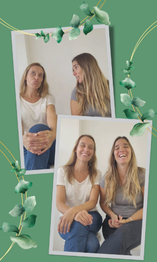

¡Hola! Somos Nandi y Angi
Somos las responsables de AY CAROLINA!!
emprendimiento familiar que nace de la pasión por la cocina y el deseo de ofrecer productos deliciosos y saludables.
Nos especializamos en la elaboración de productos sin gluten, ideales para quienes buscan opciones más saludables sin renunciar al sabor.
